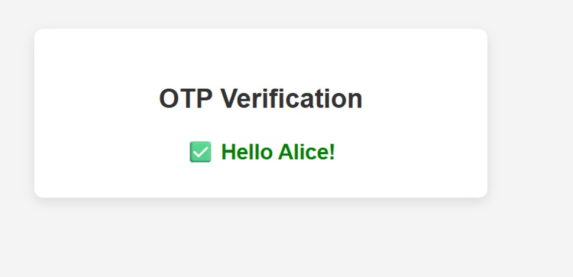

The Objective
Engineering a sub-second facial recognition pipeline from local edge capture to cloud-based authorization.
This system bridges the gap between physical hardware and cloud intelligence. It captures live video at the edge, streams it through secure AWS channels, and executes complex serverless logic to authorize entry. The result is a seamless, keyless experience for known users while maintaining high-security protocols for guests.

Event-driven architecture: Ingesting local video via FFmpeg and GStreamer into AWS Rekognition.
Edge Ingestion and Streaming
The system begins at the hardware level. FFmpeg captures the raw camera feed and encodes it using the H.264 codec for standardized network transmission. This feed is pushed to a local MediaMTX server where a GStreamer producer, running within a Docker container, streams the data to AWS Kinesis Video Streams for real-time cloud analysis.
Facial Recognition and Decision Logic
Once in the cloud, Amazon Rekognition Video processes the stream to detect faces against a known database. A central Lambda processor evaluates the metadata, distinguishing between residents and visitors. Known visitors are automatically issued a One-Time Passcode via SNS, while unrecognized individuals trigger an Owner Approval Workflow through a custom S3 hosted web interface.
Verification and Security
To prevent unauthorized access, One-Time Passcodes are stored in DynamoDB with a 5-minute Time-to-Live attribute, ensuring they expire automatically. This dual-factor approach, consisting of facial ID and a transient OTP, creates a robust security layer that is fully automated and highly scalable.

Custom-built web portal for real-time OTP submission and access logs.